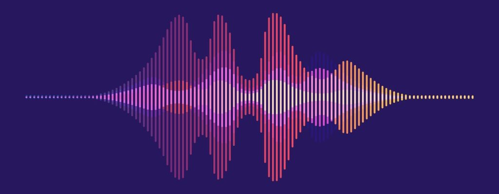

Projects
Automatic Synthesizer Proramming in Cross Modal Parameter Spaces
Synthesizers have been an essential tool for composers of any style of music including computer generated sound. They allow for an expansion in timbral variety to the orchestration of a piece of music or sound scape. Sound designers are trained to be able to recreate a timbre in their head using a synthesizer. This works well for simple sounds but becomes more difficult as the number of parameters required to produce a specific timbre increase. The goal of this research project is to build a cross modal retrieval system that can retrieve correct synthesizer parameter vector given an audio signal representation.
Synth 3D

VST synthesizer with 3 individual oscillators Each oscillator has it's own 3D binaural panner Two additional filters with ADSR parameters are included
More InfoLibrosa 0.9

Developed by Dr. Brian McFee, Librosa is a python package for music and audio analysis. It provides the building blocks necessary to create music information retrieval systems. Version 0.9 has expanded the library's API to provide seamless processing of multi channel audio signals.
AFRINUM

AFRINUM aims at renewing the discourse about innovation in Western African societies through the lens of the popular music industry. We consider digital technology as a globalized tool vs a cultural artifact to reflect upon the many specificities that this tool takes and the values to which it refers. This digital music culture will be investigated within a large range of social, economic and political contexts to which this culture participates meanwhile contributes to transforming, producing or reifying. This project is done as part of Dr. Leila Adu Gilmore's Critical Sonic Practice Lab
Multidimensional Searches into an Interior Point Solver

This is an optimization research project focussed on novel approaches to linear program solvers. It was done in the University of Nebraska Omaha's Data and Decisions Sciences Laboratory under the supervision of Dr. Fabio Torres Vitor. The project focuses on adding multidimensional searches into the traditional interior point method algorithm.
Detecting Stressed and Unstressed Regions in biometric signals

Research on wearble computing done with the Embedded & Pervaisve Systems Lab at Washington State University under the direction of Dr. Hassan Ghasemzadeh. The goal was to use biometric signal data to predict the likelood of alchohol relapse. Participants wore Empatica's E4 wristband while performing regular tasks. The signal data was analyzed for correlation with alchohol cravings and binary classification models were developed to predict the likelood of giving in to these cravings.
PROSTATID™

ProstatID™ is a software interface for post-processing MRI using cloud based computing, physician workstation integration, and AI image interpretation to provide highly accurate prostate cancer diagnostics.
More InfoMicroprocessor System Design Project
The objective of this project was to give students real world experience with building a microprocessor system. The microprocessor system is based on Intel's 8051 microcontroller and performs a variety of memory functions to read, edit, move, and find contents in ram. It also interfaces with a variety of IO devices such as an LCD display, a real time clock, a seven segment display, and an analog to digital converter.
More InfoWi-Fi Synthesizer Project
The Wi-Fi Synthesizer project was conceptualized as a device to read midi input and generate audio waveforms based on the information provided by the midi signal. The device would also transfer the midi signal received via Wi-Fi to a website by a http request. The midi component of the project was not included in the final application because of time restraints, but the circuitry was still included in the design. The final application outputs a 100hz audio signal with a user selected wave shape (selected from four options). The device will send data to a website indicating which waveform was last selected.
More Info